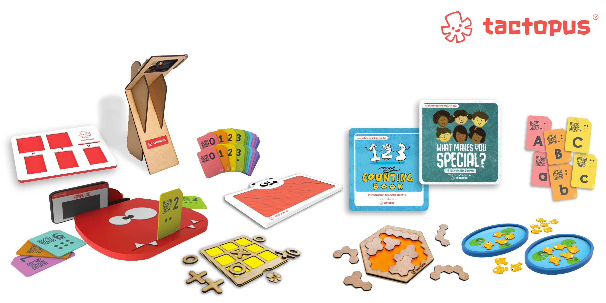
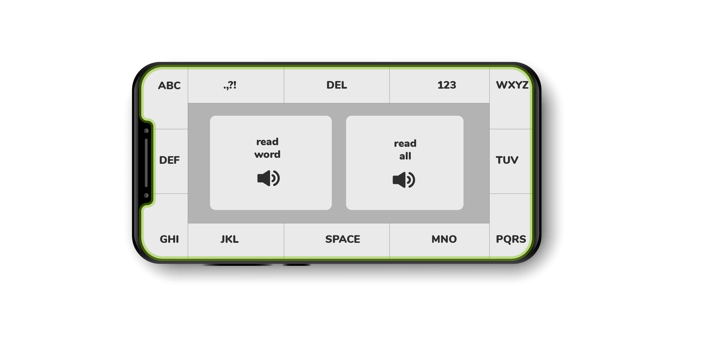
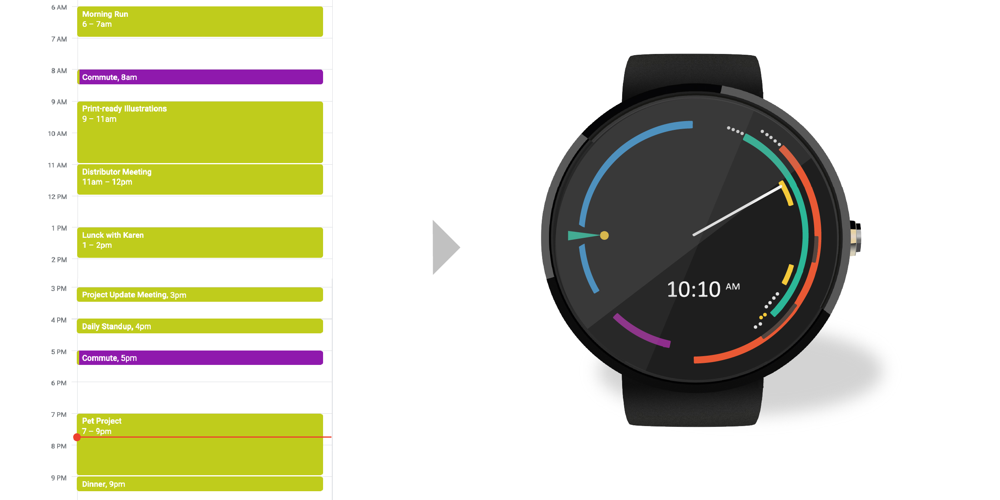
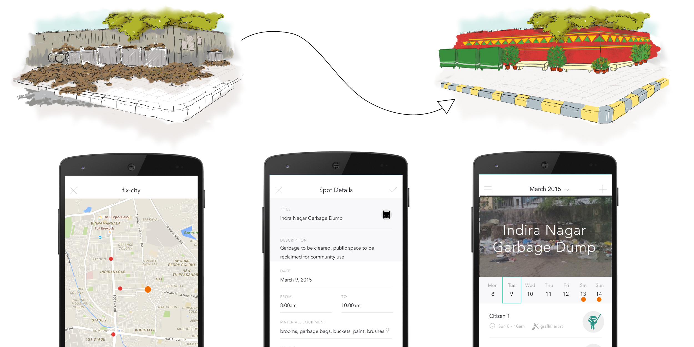
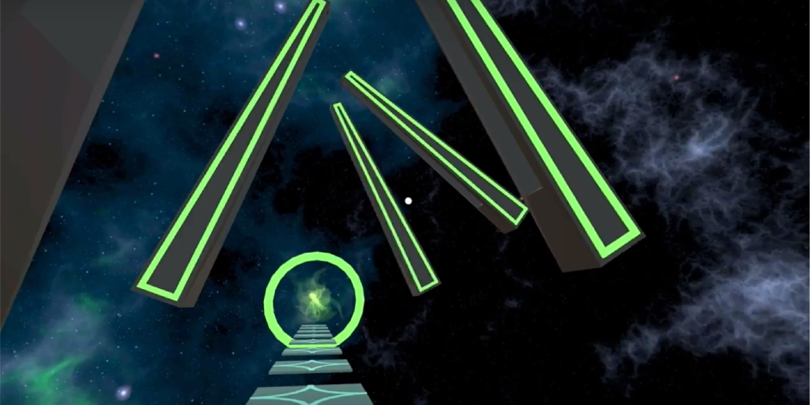
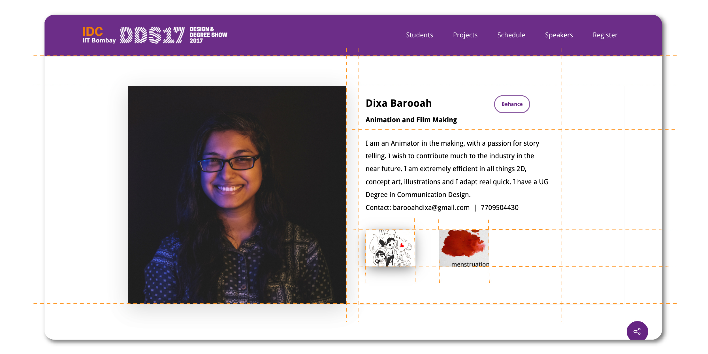
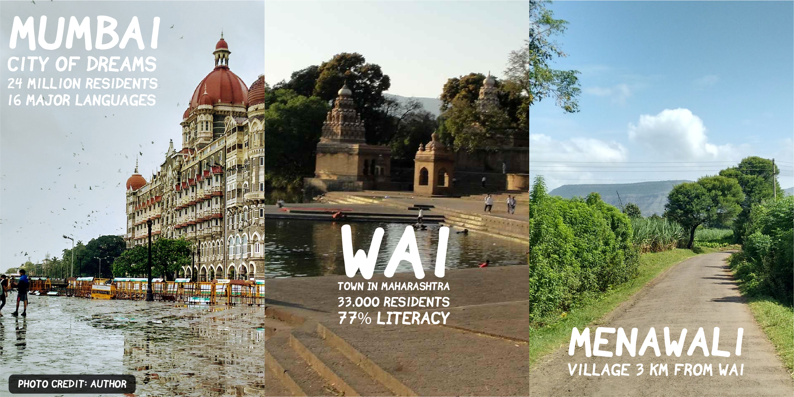

User Experience Design
Mobile, web, wearables, VR. Design for digital experiences.
Tactopus: Mixed-reality Learning
Mixed reality learning aids for children with disabilities
Founder and design lead, developed a suite of learning products that brige the tangible and digital in children's play.

Typing When Blind
An alternate keyboard layout that makes it easier to type. CHI 2016.
Finalist at CHI Student Design Competition, San Jose.

Calendar-based Time Display
What are we really looking for when we look at the time?
Representing calendar events on a circular dial, for added contextual meaning to reading the time. Also creates a visual overview of the day, creating nudges for habit changes.

Fix-city: Civic Engagement
An app that brings people together for social good.
Inspired by citizen groups that organise themselves to fix neighbourhood infrastructure problems by crowdsourcing funds and labour. An app that helps organise more such activities at scale.

Virtual Reality Game: Skywalk
A lot like crossing the road in India.
A VR game in which the objective is to cross over to the escape portal to proceed. Along the way, if you get hit by one of the swinging bars,... see what happens.

Design Degree Show 2017
Web design, development and project management.
Design degree show is the annual showcase of the graduating batch of designers from IDC School of Design, IIT Bombay
As part of the graduating batch, we designed our website to showcase student work, organise a 3 day event, with invited speakers and exhibitions.

Understanding digital India: User Studies
Smartphone usage amongst emergent users in India. Paper in IndiaHCI.
